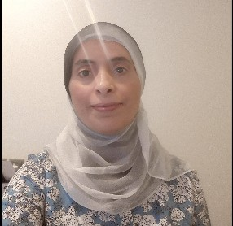

Propriété intellectuelle et recherche : protéger, partager et valoriser les résultats scientifiques
Samedi 7 novembre 20268 h 30 – 13 h 00Hammamet
Déroulement
Propriété intellectuelle, protection et valorisation des résultats scientifiques
Intervenante : Mme Neila Ben Slima
L’identification des actifs incorporels protégeables dans la recherche scientifique et l’analyse des conditions de brevetabilité (nouveauté, activité inventive et application industrielle) conformément à la législation nationale.
Information sur les procédures pratiques de dépôt de brevets auprès des instances compétentes telles que l’INNORPI, et les stratégies d’extension internationale via le Traité de coopération en matière de brevets (PCT).
Les voies d’exploitation de ces actifs de la propriété intellectuelle, la gestion des droits des agents publics inventeurs, et la sécurisation des relations partenariales à travers des instruments contractuels adaptés (accords de confidentialité, licences d’exploitation, conventions de copropriété).
1
Les fondamentaux de la propriété intellectuelle
2
Le droit d’auteur et les brevets d’invention
3
Les voies d’exploitation et les droits de l’agent public inventeur
L’objectif est de doter les participants d’une maîtrise des fondamentaux de la propriété intellectuelle et des différents outils juridiques de protection, du droit des brevets d’invention, ainsi que des techniques de négociation et de contractualisation avec le tissu socio-économique.
Les autres facettes de la propriété intellectuelle du chercheur en informatique au-delà du brevet
Intervenante : Dr. Sihem Ben Sassi
Un projet de recherche en informatique relève de plusieurs régimes de propriété intellectuelle à la fois. Le code est protégé par le droit d’auteur dès sa création. Le procédé technique peut faire l’objet d’un brevet. Les données et les poids d’un modèle peuvent rester confidentiels. Le nom du projet peut devenir une marque. Chaque choix ouvre certaines voies et en ferme d’autres.
Cette présentation complète la démarche de brevetage par les autres outils dont dispose le chercheur. Elle présente les licences open source comme une manière d’exercer ses droits, et montre ce qui les distingue au-delà des catégories habituelles. Elle examine la place des brevets dans ces licences, avec les concessions de droits et les clauses de rétorsion. Elle rappelle qu’une publication peut détruire la nouveauté d’une invention. Elle aborde aussi les stratégies qui combinent brevet et ouverture, et les vérifications attendues lors de la création d’une spin-off.
Enfin, la présentation examine ce que l’intelligence artificielle change à la propriété intellectuelle, de la qualité d’auteur ou d’inventeur jusqu’aux obligations attachées au code, aux poids, aux données et aux sorties d’un modèle.
Elle se termine par une feuille de route pour décider avant de publier.
De la recherche d’antériorité à la rédaction d’une demande de brevet
Intervenante : Mme Neila Ben Slima · Modératrice : Dr. Ines Bayoudh Saâdi
La recherche d’antériorité dans les bases de données internationales de brevets : pourquoi, quand, où et comment.
Les techniques de rédaction d’une demande de brevet selon la norme tunisienne NT 212 (08) : composition de la demande, description technique, revendications, figures, dessins, numéros de référence et abrégé.
1
Les techniques de recherche dans les bases de données des brevets
2
Les techniques de rédaction d’une demande de brevet
L’atelier permet de s’initier aux techniques d’état de l’art et de recherche documentaire via les bases de données de brevets, et d’acquérir les compétences méthodologiques de base pour la rédaction d’une demande de brevet.
Intervenantes et modératrice
Mme Neila Ben Slima
Intervenante · Sous-directrice à la Direction générale de la valorisation de la recherche au MES
Juriste de formation et sous-directrice à la Direction générale de la valorisation de la recherche au Ministère de l’Enseignement supérieur et de la Recherche scientifique.
Spécialiste de la propriété intellectuelle, elle pilote les indicateurs nationaux de dépôt de brevets, tout en œuvrant à l’amélioration du cadre juridique lié à la recherche scientifique. En sa qualité de mandataire auprès de l’INNORPI et membre du réseau CATI (OMPI), elle accompagne les institutions et les chercheurs dans la sécurisation de leurs inventions et la structuration de leurs partenariats socio-économiques.
Formatrice experte et membre du comité de création des masters en propriété intellectuelle, elle s’investit quotidiennement pour transformer l’excellence académique en actifs stratégiques pour l’économie.

Dr. Sihem Ben Sassi
Intervenante
Sihem Ben Sassi est maître de conférences en informatique à l’École Nationale des Sciences de l’Informatique (ENSI) et membre senior du laboratoire RIADI de l’Université de la Manouba. Elle a obtenu les diplômes d’ingénieur concepteur, des études approfondies et de doctorat en informatique de l’ENSI, où elle a également obtenu son diplôme d’habilitation universitaire en 2021.
Ses intérêts de recherche portent sur les systèmes d’aide à la décision, les systèmes de recommandation dynamiques, la centricité utilisateur, la qualité logicielle, les lignes de produits et la réutilisation des composants logiciels libres. Elle a co-encadré des thèses de doctorat et des masters dans ce domaine et est l’auteure de plusieurs articles évalués par des pairs. Elle a collaboré avec des chercheurs du CRI (Sorbonne Université), du Latece (Université du Québec à Montréal) et de l’Université de technologie de Tampere. Elle a contribué à des projets du CMCU, a été co-présidente du comité de programme de la conférence ICSR 2020, rédactrice en chef invitée de la revue ISSE, et est secrétaire générale d’ISKO-Maghreb, bureau tunisien.